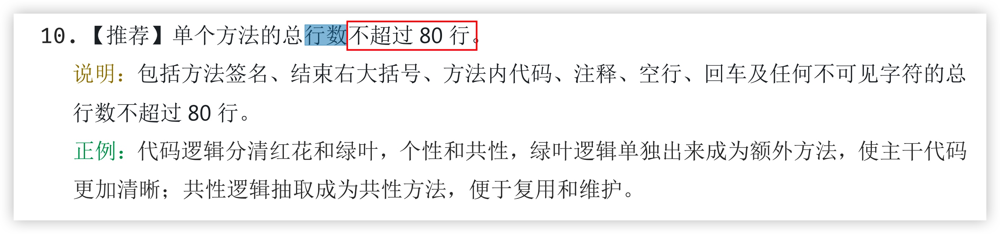
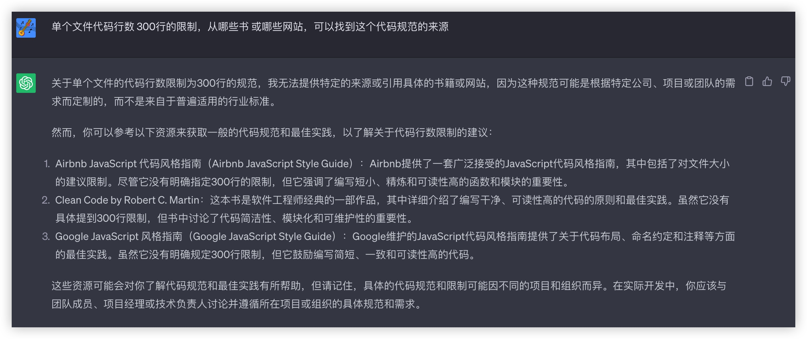
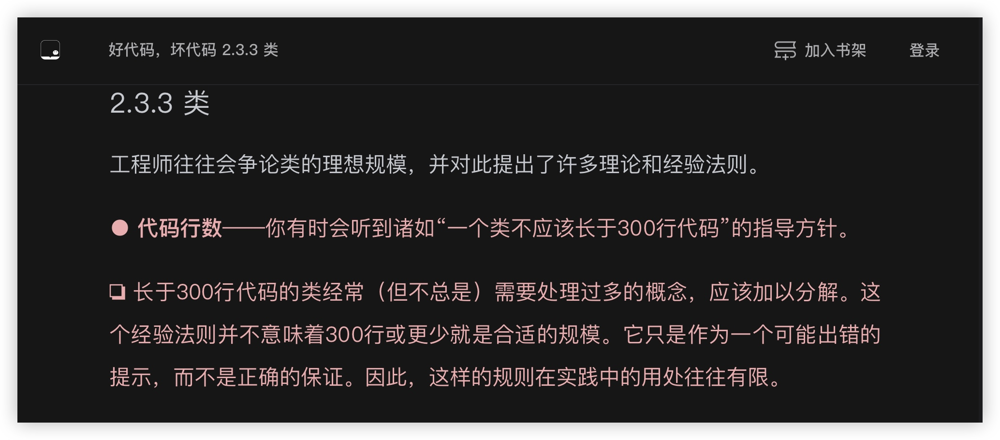
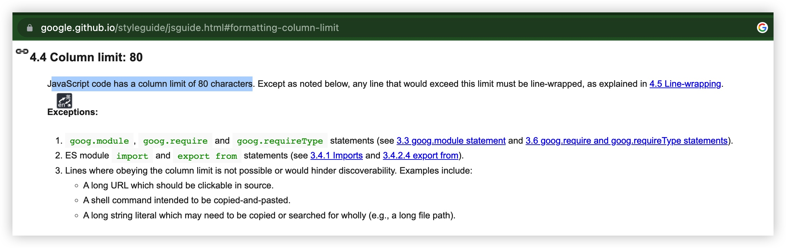

代码规范
By yestin
讨论背景
相信大家写代码时 对自己都有一些要求，比如下面的
- 基本期望：写出他人能容易看懂的代码
- 更高追求：写出他人看起来很爽的代码
每经历一个阶段，大家都对编码有不同程度的进步提升，可以分享；同时也会积累一些场景下代码如屎的烦恼，想要破局。
于是，阶段性的，需要一个机会，大家开个交流会进行讨论
- （对于每个个体）互通有无，集思广益，团队每人都有所提升
- （对于互相之间协作）更多地了解到彼此 阅读代码、写代码的风格习惯，增进理解
- （对于工作）对现阶段遇到的痛点，找出更优解，或制定调研计划
每次讨论，规范条款上的收获，不在于多少，至少会收获了一些代码细节上的技巧或认知，最重要的是 大大增进了互相的了解，协作起来将越来越紧密顺畅。
讨论成果
组件代码结构
关键点: 打开文件后，更方便的看到核心代码（那就尽量靠前咯）
也就是 render/return组件 之前的代码量尽可能少；那么，就需要通过函数提炼、划分职责等方式转移到别处。
组件代码 书写顺序 示例如下
// AAView.js
import { xxCalculate, xxUploadEvent } from 'app/components/XxModule'
import AView from './components/AView'
import BView from './components/BView'
//$$ 用于组件函数内的变量 紧邻写在组件函数上方
const variableUsedInXXComp = ...
//组件函数
const AAView = props => {
//$$ props解构, 放第一行
///reason：即使AAView上面不写@param注释，通过这里的解构也能看出props的参数
const { paramA, paramB } = props
//$$ 副作用函数(即use开头的函数)，写在顶层作用域，
const [aEverClicked, setAEverClicked] = useState(false)
const [bClickedTime, setBClickedTime] = useState(0)
...
//$$ 归类逻辑代码到hooks，e.g. 数据处理（获取数据、更新数据）聚合到一个hooks， 滑动相关监听处理 聚合到另一个hooks
const {loading, data, error, addData, updateData} = useLoadData({id: paramA})
...
//$$ 业务逻辑处理。 注意：如果这部分代码较多，一般是可以转移几个api，挪到 某单一职责的hooks里去
const onPressAView = () => {
//如果复杂逻辑(多行 e.g. 15行)，抽取纯函数， 与XXComp并列 放其后面
addData( calculateAndCreateItemData(inputX, bClickedTime) )
setAEverClicked(true)
xxUploadEvent()
}
const onPressBView = () => {
//简单逻辑(e.g. <10行)，直接写在这里
updateData({ count: bClickedTime, key: variableUsedInXXComp })
...
setBClickedTime(bClickedTime+1)
}
...
...
//$$ render
return (
<View style={styles.container}>
<AView onPress={onPressAView}>
{aEverClicked ? <View> ... </View> : null }
...
</AView>
<BView param={inputY} onPress={onPressBView}>
...
</BView>
...
{
data?.map(item => (<View style={styles.content}}>
<Text style={styles.title}>{styles.title}</Text>
<Image style={styles.cover} source={data[0].cover} />
</View>))
}
</View>
)
}
//$$ hooks 数据获取相关逻辑：请求、loading状态、错误、数据处理(response data -> UI data)
const useLoadData = ({id}) => {
const [data, setData] = useState(null)
const [loading, setLoading] = useState(false)
const [error, setError] = useState(null)
useEffect(()=>{
request({id}).then(res=>{
setData(res.data)
});
}, [])
//请求
return {
data,
loading,
error
...
}
}
//$$ 仅用于组件内部的函数 紧邻写在组件函数下方
const calculateAndCreateItemData = (a, b) => {
let result = {}
//复杂逻辑
...
...
result.count = xxCalculate(a, ...)
return result
}
// 方法提炼到这里 reason：
// 1.提炼纯函数，略利于性能
// 2.移到这里，减少对核心代码的干扰
//$$ 仅用于样式的变量 紧邻写在styles声明的上方
const listWidth = px2dp(100)
const styles = StyleSheet.create({
container: {
//约束自身
flex: 1,
backgroundColor: '#eee',
marginTop: px2dp(20),
//约束子视图的
paddingHorizontal: px2dp(15),
flexDirection: "row",
alignItems: "center",
justifyContent: "space-between",
},
list: {
marginHorizontal: 10,
width: listWidth,
...
},
...
})
较复杂模块拆分后的目录结构
目录 体现着模块划分思维
取项目里的一个典型示例
> tree ./app/screens/graphic/tabs/userHome/
./app/screens/graphic/tabs/userHome/
├── components
│ ├── Header
│ │ ├── BackgroundImage.js
│ │ ├── MoreButton.js
│ │ ├── OpaqueNavBar.js
│ │ ├── index.js
│ │ └── useHeader.js
│ ├── LoadingView.js
│ ├── Tabbar.js
│ ├── TabsStickScrollView.js
│ └── list
│ ├── HistoryWorkList.js
│ ├── LikedWorkList.js
│ ├── MineWorkList.js
│ ├── UserWorkList.js
│ └── item
│ ├── UnpublishedEntryItem.js
│ ├── UnpublishedType.js
│ └── index.js
├── index.js
├── otherScreens
│ ├── DraftScreen.js
│ └── RejectScreen.js
└── utils
└── DraftDataManager.js
合理拆分模块，避免单文件代码行数过多，统一命名风格，将大大减少理解阻碍
通知命名
以后会出这样一个 通知名 集中存放的文件
//NotificationCenter.js
export {
listen,
emit,
}
// 参考 iOS通知命名，UIKeyboardWillChangeFrameNotification，
// 命名表达出 who did (/will do) what，（即将）谁做了什么
//画本（某作品）点赞状态改变
export const kGraphicLikeStatusChangeNotification = 'kGraphicLikeStatusChangeNotification';
/* 使用示例
import { emit, kGraphicLikeStatusChangeNotification } from 'app/.../NotificationCenter';
emit(kGraphicLikeStatusChangeNotification, { graphicId: 123, likeStatus: 1 });
import { listen, kGraphicLikeStatusChangeNotification } from 'app/.../NotificationCenter';
const listener = listen(kGraphicLikeStatusChangeNotification, (data) => {
...
}
listener.remove();
*/
单个函数的总行数 限制多大合适？
- 《阿里巴巴 Java 开发手册 v1.4.0（详尽版）》 ：80 行
https://edu.aliyun.com/article/103 
若结合到咱公司自己项目， <> 与 </>、{ 与 } 等标签的开始、结束（作用域）内尽量不超过 80 行
示例中的组件函数
AAView比较特殊，其本身可能超 100 行，甚至更多 也没问题。因为其内部包含多个子函数、子组件；AAView内部的子函数、子组件<View></View>等可以参考 80 行限制
- 《代码不朽》：15 行

- 为什么编程应遵循 “30” 规则
《代码大全》Steve McConnell 指出，理论上，一个方法或函数的最佳最大限制是在一个屏幕上可以容纳的行数。
单个文件代码行数 限制多大合适？
核心点
- 维护成本：长而冗长的代码通常更难以理解、调试和维护。通过设置代码行数限制，可以鼓励开发者编写更简洁、模块化的代码，从而减少维护成本。
ChatGPT 的看法

掘金文章 看法
其它看法
- 【生理上】人的记忆只有三屏，80 行预计在两屏至两屏半之间。
- 【原则上】主干逻辑清晰，简洁易读
- 【要纯】初期代码多烂其实问题都不大的, 只要你函数全都是纯的, 以后化简还是拆起来都不是问题.
- 按照《重构》去做了，就不会出现单文件代码行数多的问题了
- 《好代码，坏代码》

单行代码 字符串宽度/数量限制
上面提到的文件代码行数、函数代码行数在各大公司标准中 基本没有指明，但代码列数限制到是不少标准里 提到。
谷歌的Google JavaScript Style Guide 80

其它
市面上 大而全的 JavaScript 规范
代码规范的常用工具
eslint prettier